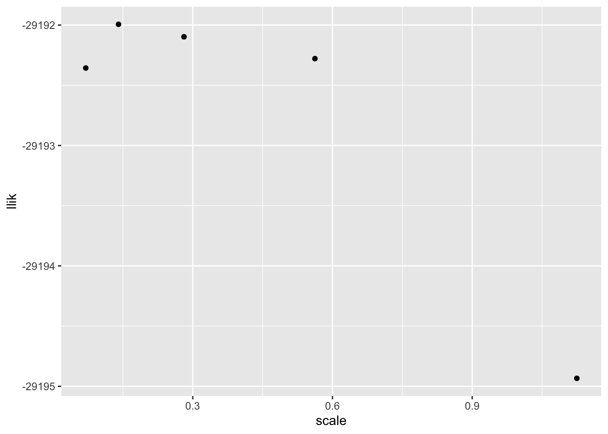

NPMLE via ebnm
Jason Willwerscheid
4/29/2020
Last updated: 2020-05-08
Checks: 6 0
Knit directory: FLASHvestigations/
This reproducible R Markdown analysis was created with workflowr (version 1.2.0). The Report tab describes the reproducibility checks that were applied when the results were created. The Past versions tab lists the development history.
Great! Since the R Markdown file has been committed to the Git repository, you know the exact version of the code that produced these results.
Great job! The global environment was empty. Objects defined in the global environment can affect the analysis in your R Markdown file in unknown ways. For reproduciblity it’s best to always run the code in an empty environment.
The command set.seed(20180714) was run prior to running the code in the R Markdown file. Setting a seed ensures that any results that rely on randomness, e.g. subsampling or permutations, are reproducible.
Great job! Recording the operating system, R version, and package versions is critical for reproducibility.
Nice! There were no cached chunks for this analysis, so you can be confident that you successfully produced the results during this run.
Great! You are using Git for version control. Tracking code development and connecting the code version to the results is critical for reproducibility. The version displayed above was the version of the Git repository at the time these results were generated.
Note that you need to be careful to ensure that all relevant files for the analysis have been committed to Git prior to generating the results (you can use wflow_publish or wflow_git_commit). workflowr only checks the R Markdown file, but you know if there are other scripts or data files that it depends on. Below is the status of the Git repository when the results were generated:
Ignored files:
Ignored: .DS_Store
Ignored: .Rhistory
Ignored: .Rproj.user/
Ignored: analysis/.DS_Store
Ignored: code/.DS_Store
Ignored: code/flashier_bench/.DS_Store
Ignored: data/.DS_Store
Ignored: data/flashier_bench/
Ignored: data/metabo3_gwas_mats.RDS
Ignored: output/jean/
Untracked files:
Untracked: analysis/batting_order.Rmd
Untracked: code/fasfunction.R
Untracked: code/nnmf.R
Untracked: code/wals.R
Untracked: data/BR_teams_2019.csv
Untracked: data/FG_teams_2019.csv
Untracked: data/batting_order.rds
Untracked: data/cole.rds
Untracked: data/odorizzi.rds
Untracked: data/pitcher.rds
Untracked: data/pitcher2.rds
Untracked: data/pitcher_all.rds
Untracked: mlb2.R
Untracked: mlb_standings.txt
Untracked: ottoneu.R
Untracked: phoible.R
Note that any generated files, e.g. HTML, png, CSS, etc., are not included in this status report because it is ok for generated content to have uncommitted changes.
These are the previous versions of the R Markdown and HTML files. If you’ve configured a remote Git repository (see ?wflow_git_remote), click on the hyperlinks in the table below to view them.
| File | Version | Author | Date | Message |
|---|---|---|---|---|
| Rmd | bf4d8a5 | Jason Willwerscheid | 2020-05-08 | wflow_publish(“analysis/ebnm_npmle.Rmd”) |
| html | 4291adf | Jason Willwerscheid | 2020-05-08 | Build site. |
| Rmd | ff42bb0 | Jason Willwerscheid | 2020-05-08 | wflow_publish(“analysis/ebnm_npmle.Rmd”) |
| html | 1af4141 | Jason Willwerscheid | 2020-05-08 | Build site. |
| Rmd | 4afebf9 | Jason Willwerscheid | 2020-05-08 | wflow_publish(“analysis/ebnm_npmle.Rmd”) |
| html | 93fda13 | Jason Willwerscheid | 2020-04-29 | Build site. |
| Rmd | 8420f5d | Jason Willwerscheid | 2020-04-29 | wflow_publish(“analysis/ebnm_npmle.Rmd”) |
I want to test out approximations of NPMLEs using a dense ashr grid. Let \(x_1, \ldots, x_n\) be \(n\) observations with standard errors equal to 1. Dicker and Zhao show that when the true NPMLE has compact support, then a good approximation can be obtained by optimizing over the family of distributions that’s supported on \(\sqrt{n}\) equally spaced points between \(\min (x)\) and \(\max (x)\). Instead of using point masses, I use an ashr grid with \(\sqrt{n}\) uniform components of equal width. Let’s see how it works in practice.
Here’s the true distribution which I’ll be sampling from. It’s bimodal with peaks at -5 and 5, so a unimodal prior family wouldn’t work very well.
suppressMessages(library(tidyverse))
true_g <- ashr::normalmix(pi = rep(0.1, 10),
mean = c(rep(-5, 5), rep(5, 5)),
sd = c(0:4, 0:4))
cdf_grid <- seq(-20, 20, by = 0.1)
true_cdf <- drop(ashr::mixcdf(true_g, cdf_grid))
ggplot(tibble(x = cdf_grid, y = true_cdf), aes(x = x, y = y)) + geom_line()
| Version | Author | Date |
|---|---|---|
| 93fda13 | Jason Willwerscheid | 2020-04-29 |
I start by sampling 1000 observations and adding normally distributed noise.
samp_from_g <- function(g, n) {
comp <- sample(1:length(g$pi), n, replace = TRUE, prob = g$pi)
mean <- g$mean[comp]
sd <- g$sd[comp]
return(rnorm(n, mean = mean, sd = sd))
}
set.seed(666)
n <- 1000
samp <- samp_from_g(true_g, n) + rnorm(n)
ggplot(tibble(x = samp), aes(x = x)) + geom_histogram(binwidth = 1)
I want to see how grid density affects convergence properties and the quality of the solution. From a log likelihood perspective, using a grid of points spaced at a distance equal to half the standard deviation of the noise gives a solution that is pretty much just as good as a very fine grid:
mixsqp_control = list(verbose = TRUE)
scale_vec <- (max(samp) - min(samp) + 1e-4) / 2^(5:9)
res_list <- list()
for (scale in scale_vec) {
ebnm_res <- ebnm::ebnm_npmle(samp, scale = scale, control = mixsqp_control)
res_list <- c(res_list, list(ebnm_res))
}#> Running mix-SQP algorithm 0.3-39 on 1000 x 32 matrix
#> convergence tol. (SQP): 1.0e-08
#> conv. tol. (active-set): 1.0e-10
#> zero threshold (solution): 1.0e-08
#> zero thresh. (search dir.): 1.0e-14
#> l.s. sufficient decrease: 1.0e-02
#> step size reduction factor: 7.5e-01
#> minimum step size: 1.0e-08
#> max. iter (SQP): 1000
#> max. iter (active-set): 20
#> number of EM iterations: 20
#> Computing SVD of 1000 x 32 matrix.
#> Matrix is not low-rank; falling back to full matrix.
#> iter objective max(rdual) nnz stepsize max.diff nqp nls
#> 1 +1.956458731e+00 -- EM -- 32 1.00e+00 4.38e-02 -- --
#> 2 +1.935829181e+00 -- EM -- 32 1.00e+00 1.61e-02 -- --
#> 3 +1.931678224e+00 -- EM -- 32 1.00e+00 8.46e-03 -- --
#> 4 +1.929864768e+00 -- EM -- 32 1.00e+00 5.65e-03 -- --
#> 5 +1.928730543e+00 -- EM -- 32 1.00e+00 4.43e-03 -- --
#> 6 +1.927924493e+00 -- EM -- 32 1.00e+00 3.81e-03 -- --
#> 7 +1.927316495e+00 -- EM -- 32 1.00e+00 3.41e-03 -- --
#> 8 +1.926839399e+00 -- EM -- 32 1.00e+00 3.11e-03 -- --
#> 9 +1.926453366e+00 -- EM -- 32 1.00e+00 2.87e-03 -- --
#> 10 +1.926133133e+00 -- EM -- 32 1.00e+00 2.65e-03 -- --
#> 11 +1.925861969e+00 -- EM -- 32 1.00e+00 2.47e-03 -- --
#> 12 +1.925628413e+00 -- EM -- 32 1.00e+00 2.30e-03 -- --
#> 13 +1.925424381e+00 -- EM -- 32 1.00e+00 2.14e-03 -- --
#> 14 +1.925244028e+00 -- EM -- 32 1.00e+00 2.00e-03 -- --
#> 15 +1.925083038e+00 -- EM -- 32 1.00e+00 1.88e-03 -- --
#> 16 +1.924938158e+00 -- EM -- 32 1.00e+00 1.76e-03 -- --
#> 17 +1.924806893e+00 -- EM -- 32 1.00e+00 1.66e-03 -- --
#> 18 +1.924687298e+00 -- EM -- 32 1.00e+00 1.56e-03 -- --
#> 19 +1.924577831e+00 -- EM -- 32 1.00e+00 1.48e-03 -- --
#> 20 +1.924477250e+00 -- EM -- 32 1.00e+00 1.40e-03 -- --
#> 1 +1.924384542e+00 +2.521e-02 32 ------ ------ -- --
#> 2 +1.922597410e+00 +6.178e-03 19 1.00e+00 9.88e-02 20 1
#> 3 +1.922590651e+00 -5.895e-06 20 1.00e+00 2.08e-02 12 1
#> Optimization took 0.01 seconds.
#> Convergence criteria met---optimal solution found.
#> Running mix-SQP algorithm 0.3-39 on 1000 x 64 matrix
#> convergence tol. (SQP): 1.0e-08
#> conv. tol. (active-set): 1.0e-10
#> zero threshold (solution): 1.0e-08
#> zero thresh. (search dir.): 1.0e-14
#> l.s. sufficient decrease: 1.0e-02
#> step size reduction factor: 7.5e-01
#> minimum step size: 1.0e-08
#> max. iter (SQP): 1000
#> max. iter (active-set): 20
#> number of EM iterations: 20
#> Computing SVD of 1000 x 64 matrix.
#> Matrix is not low-rank; falling back to full matrix.
#> iter objective max(rdual) nnz stepsize max.diff nqp nls
#> 1 +1.998304163e+00 -- EM -- 64 1.00e+00 2.26e-02 -- --
#> 2 +1.978618903e+00 -- EM -- 64 1.00e+00 8.36e-03 -- --
#> 3 +1.974665257e+00 -- EM -- 64 1.00e+00 4.43e-03 -- --
#> 4 +1.972906174e+00 -- EM -- 64 1.00e+00 2.98e-03 -- --
#> 5 +1.971801350e+00 -- EM -- 64 1.00e+00 2.35e-03 -- --
#> 6 +1.971018417e+00 -- EM -- 64 1.00e+00 2.00e-03 -- --
#> 7 +1.970430058e+00 -- EM -- 64 1.00e+00 1.78e-03 -- --
#> 8 +1.969970002e+00 -- EM -- 64 1.00e+00 1.60e-03 -- --
#> 9 +1.969599129e+00 -- EM -- 64 1.00e+00 1.46e-03 -- --
#> 10 +1.969292810e+00 -- EM -- 64 1.00e+00 1.34e-03 -- --
#> 11 +1.969034819e+00 -- EM -- 64 1.00e+00 1.24e-03 -- --
#> 12 +1.968814055e+00 -- EM -- 64 1.00e+00 1.14e-03 -- --
#> 13 +1.968622676e+00 -- EM -- 64 1.00e+00 1.06e-03 -- --
#> 14 +1.968454980e+00 -- EM -- 64 1.00e+00 9.91e-04 -- --
#> 15 +1.968306716e+00 -- EM -- 64 1.00e+00 9.26e-04 -- --
#> 16 +1.968174644e+00 -- EM -- 64 1.00e+00 8.69e-04 -- --
#> 17 +1.968056240e+00 -- EM -- 64 1.00e+00 8.17e-04 -- --
#> 18 +1.967949507e+00 -- EM -- 64 1.00e+00 7.70e-04 -- --
#> 19 +1.967852837e+00 -- EM -- 64 1.00e+00 7.28e-04 -- --
#> 20 +1.967764915e+00 -- EM -- 64 1.00e+00 6.90e-04 -- --
#> 1 +1.967684657e+00 +2.383e-02 64 ------ ------ -- --
#> 2 +1.967610905e+00 +2.227e-02 44 1.00e+00 3.19e-02 20 1
#> 3 +1.966554558e+00 +1.001e-02 24 1.00e+00 1.52e-01 20 1
#> 4 +1.965871389e+00 +8.167e-04 19 1.00e+00 8.43e-02 20 1
#> 5 +1.965818057e+00 +7.505e-04 20 1.00e+00 8.10e-02 20 1
#> 6 +1.965682073e+00 +7.940e-04 19 1.00e+00 1.28e-01 20 1
#> 7 +1.965647881e+00 -1.384e-07 20 1.00e+00 4.87e-02 15 1
#> Optimization took 0.05 seconds.
#> Convergence criteria met---optimal solution found.
#> Running mix-SQP algorithm 0.3-39 on 1000 x 128 matrix
#> convergence tol. (SQP): 1.0e-08
#> conv. tol. (active-set): 1.0e-10
#> zero threshold (solution): 1.0e-08
#> zero thresh. (search dir.): 1.0e-14
#> l.s. sufficient decrease: 1.0e-02
#> step size reduction factor: 7.5e-01
#> minimum step size: 1.0e-08
#> max. iter (SQP): 1000
#> max. iter (active-set): 20
#> number of EM iterations: 20
#> Computing SVD of 1000 x 128 matrix.
#> Matrix is not low-rank; falling back to full matrix.
#> iter objective max(rdual) nnz stepsize max.diff nqp nls
#> 1 +2.008736819e+00 -- EM -- 128 1.00e+00 1.14e-02 -- --
#> 2 +1.989287604e+00 -- EM -- 128 1.00e+00 4.16e-03 -- --
#> 3 +1.985382280e+00 -- EM -- 128 1.00e+00 2.18e-03 -- --
#> 4 +1.983637300e+00 -- EM -- 128 1.00e+00 1.47e-03 -- --
#> 5 +1.982540790e+00 -- EM -- 128 1.00e+00 1.16e-03 -- --
#> 6 +1.981764641e+00 -- EM -- 128 1.00e+00 9.94e-04 -- --
#> 7 +1.981182148e+00 -- EM -- 128 1.00e+00 8.85e-04 -- --
#> 8 +1.980727238e+00 -- EM -- 128 1.00e+00 8.01e-04 -- --
#> 9 +1.980360942e+00 -- EM -- 128 1.00e+00 7.32e-04 -- --
#> 10 +1.980058758e+00 -- EM -- 128 1.00e+00 6.72e-04 -- --
#> 11 +1.979804553e+00 -- EM -- 128 1.00e+00 6.19e-04 -- --
#> 12 +1.979587294e+00 -- EM -- 128 1.00e+00 5.72e-04 -- --
#> 13 +1.979399185e+00 -- EM -- 128 1.00e+00 5.31e-04 -- --
#> 14 +1.979234556e+00 -- EM -- 128 1.00e+00 4.94e-04 -- --
#> 15 +1.979089181e+00 -- EM -- 128 1.00e+00 4.61e-04 -- --
#> 16 +1.978959837e+00 -- EM -- 128 1.00e+00 4.31e-04 -- --
#> 17 +1.978844015e+00 -- EM -- 128 1.00e+00 4.04e-04 -- --
#> 18 +1.978739731e+00 -- EM -- 128 1.00e+00 3.79e-04 -- --
#> 19 +1.978645387e+00 -- EM -- 128 1.00e+00 3.57e-04 -- --
#> 20 +1.978559680e+00 -- EM -- 128 1.00e+00 3.37e-04 -- --
#> 1 +1.978481532e+00 +2.708e-02 128 ------ ------ -- --
#> 2 +1.978410519e+00 +2.577e-02 108 1.00e+00 5.78e-03 20 1
#> 3 +1.978345811e+00 +2.288e-02 88 1.00e+00 2.02e-02 20 1
#> 4 +1.978286261e+00 +2.224e-02 68 1.00e+00 4.52e-02 20 1
#> 5 +1.978230918e+00 +2.160e-02 48 1.00e+00 3.81e-02 20 1
#> 6 +1.977939706e+00 +1.420e-02 28 1.00e+00 1.22e-01 20 1
#> 7 +1.976737010e+00 +5.456e-03 22 1.00e+00 7.27e-02 20 1
#> 8 +1.976677159e+00 +1.757e-05 22 1.00e+00 2.36e-02 20 1
#> 9 +1.976504458e+00 +4.534e-05 22 1.00e+00 2.04e-01 20 1
#> 10 +1.976453139e+00 -5.911e-06 22 1.00e+00 1.07e-01 20 1
#> Optimization took 0.27 seconds.
#> Convergence criteria met---optimal solution found.
#> Running mix-SQP algorithm 0.3-39 on 1000 x 256 matrix
#> convergence tol. (SQP): 1.0e-08
#> conv. tol. (active-set): 1.0e-10
#> zero threshold (solution): 1.0e-08
#> zero thresh. (search dir.): 1.0e-14
#> l.s. sufficient decrease: 1.0e-02
#> step size reduction factor: 7.5e-01
#> minimum step size: 1.0e-08
#> max. iter (SQP): 1000
#> max. iter (active-set): 20
#> number of EM iterations: 20
#> Computing SVD of 1000 x 256 matrix.
#> SVD computation took 0.12 seconds.
#> Rank of matrix is estimated to be 54.
#> iter objective max(rdual) nnz stepsize max.diff nqp nls
#> 1 +2.011397106e+00 -- EM -- 256 1.00e+00 5.74e-03 -- --
#> 2 +1.992006881e+00 -- EM -- 256 1.00e+00 2.09e-03 -- --
#> 3 +1.988113571e+00 -- EM -- 256 1.00e+00 1.10e-03 -- --
#> 4 +1.986372138e+00 -- EM -- 256 1.00e+00 7.42e-04 -- --
#> 5 +1.985277746e+00 -- EM -- 256 1.00e+00 5.86e-04 -- --
#> 6 +1.984503327e+00 -- EM -- 256 1.00e+00 5.01e-04 -- --
#> 7 +1.983922327e+00 -- EM -- 256 1.00e+00 4.45e-04 -- --
#> 8 +1.983468720e+00 -- EM -- 256 1.00e+00 4.02e-04 -- --
#> 9 +1.983103580e+00 -- EM -- 256 1.00e+00 3.67e-04 -- --
#> 10 +1.982802435e+00 -- EM -- 256 1.00e+00 3.36e-04 -- --
#> 11 +1.982549179e+00 -- EM -- 256 1.00e+00 3.10e-04 -- --
#> 12 +1.982332795e+00 -- EM -- 256 1.00e+00 2.86e-04 -- --
#> 13 +1.982145501e+00 -- EM -- 256 1.00e+00 2.66e-04 -- --
#> 14 +1.981981637e+00 -- EM -- 256 1.00e+00 2.47e-04 -- --
#> 15 +1.981836983e+00 -- EM -- 256 1.00e+00 2.31e-04 -- --
#> 16 +1.981708319e+00 -- EM -- 256 1.00e+00 2.16e-04 -- --
#> 17 +1.981593143e+00 -- EM -- 256 1.00e+00 2.03e-04 -- --
#> 18 +1.981489472e+00 -- EM -- 256 1.00e+00 1.91e-04 -- --
#> 19 +1.981395711e+00 -- EM -- 256 1.00e+00 1.80e-04 -- --
#> 20 +1.981310559e+00 -- EM -- 256 1.00e+00 1.70e-04 -- --
#> 1 +1.981232941e+00 +2.746e-02 256 ------ ------ -- --
#> 2 +1.981162267e+00 +2.626e-02 236 1.00e+00 5.25e-04 20 1
#> 3 +1.981097840e+00 +2.513e-02 216 1.00e+00 8.06e-04 20 1
#> 4 +1.981038687e+00 +2.406e-02 196 1.00e+00 3.03e-03 20 1
#> 5 +1.980984196e+00 +2.305e-02 176 1.00e+00 4.97e-03 20 1
#> 6 +1.980933688e+00 +2.207e-02 156 1.00e+00 5.15e-03 20 1
#> 7 +1.980886635e+00 +2.112e-02 136 1.00e+00 1.78e-02 20 1
#> 8 +1.980843121e+00 +2.032e-02 116 1.00e+00 1.85e-02 20 1
#> 9 +1.980802743e+00 +1.957e-02 96 1.00e+00 2.57e-02 20 1
#> 10 +1.980764993e+00 +1.884e-02 76 1.00e+00 3.13e-02 20 1
#> 11 +1.980729449e+00 +1.811e-02 56 1.00e+00 3.92e-02 20 1
#> 12 +1.980677678e+00 +1.558e-02 36 1.00e+00 6.82e-02 20 1
#> 13 +1.979708689e+00 +4.862e-03 19 1.00e+00 1.04e-01 20 1
#> 14 +1.979519296e+00 +2.252e-04 19 1.00e+00 6.32e-02 20 1
#> 15 +1.979204798e+00 +2.347e-04 20 1.00e+00 2.42e-01 20 1
#> 16 +1.979157406e+00 -5.502e-06 19 1.00e+00 5.52e-02 20 1
#> Optimization took 1.75 seconds.
#> Convergence criteria met---optimal solution found.
#> Running mix-SQP algorithm 0.3-39 on 1000 x 512 matrix
#> convergence tol. (SQP): 1.0e-08
#> conv. tol. (active-set): 1.0e-10
#> zero threshold (solution): 1.0e-08
#> zero thresh. (search dir.): 1.0e-14
#> l.s. sufficient decrease: 1.0e-02
#> step size reduction factor: 7.5e-01
#> minimum step size: 1.0e-08
#> max. iter (SQP): 1000
#> max. iter (active-set): 20
#> number of EM iterations: 20
#> Computing SVD of 1000 x 512 matrix.
#> SVD computation took 0.21 seconds.
#> Rank of matrix is estimated to be 54.
#> iter objective max(rdual) nnz stepsize max.diff nqp nls
#> 1 +2.012101775e+00 -- EM -- 512 1.00e+00 2.87e-03 -- --
#> 2 +1.992726294e+00 -- EM -- 512 1.00e+00 1.04e-03 -- --
#> 3 +1.988835983e+00 -- EM -- 512 1.00e+00 5.52e-04 -- --
#> 4 +1.987095438e+00 -- EM -- 512 1.00e+00 3.72e-04 -- --
#> 5 +1.986001578e+00 -- EM -- 512 1.00e+00 2.93e-04 -- --
#> 6 +1.985227594e+00 -- EM -- 512 1.00e+00 2.51e-04 -- --
#> 7 +1.984646968e+00 -- EM -- 512 1.00e+00 2.22e-04 -- --
#> 8 +1.984193688e+00 -- EM -- 512 1.00e+00 2.01e-04 -- --
#> 9 +1.983828838e+00 -- EM -- 512 1.00e+00 1.83e-04 -- --
#> 10 +1.983527954e+00 -- EM -- 512 1.00e+00 1.68e-04 -- --
#> 11 +1.983274934e+00 -- EM -- 512 1.00e+00 1.55e-04 -- --
#> 12 +1.983058770e+00 -- EM -- 512 1.00e+00 1.43e-04 -- --
#> 13 +1.982871680e+00 -- EM -- 512 1.00e+00 1.33e-04 -- --
#> 14 +1.982708007e+00 -- EM -- 512 1.00e+00 1.23e-04 -- --
#> 15 +1.982563533e+00 -- EM -- 512 1.00e+00 1.15e-04 -- --
#> 16 +1.982435039e+00 -- EM -- 512 1.00e+00 1.08e-04 -- --
#> 17 +1.982320024e+00 -- EM -- 512 1.00e+00 1.01e-04 -- --
#> 18 +1.982216506e+00 -- EM -- 512 1.00e+00 9.49e-05 -- --
#> 19 +1.982122892e+00 -- EM -- 512 1.00e+00 8.96e-05 -- --
#> 20 +1.982037879e+00 -- EM -- 512 1.00e+00 8.47e-05 -- --
#> 1 +1.981960393e+00 +2.736e-02 512 ------ ------ -- --
#> 2 +1.981889750e+00 +2.623e-02 492 1.00e+00 2.16e-04 20 1
#> 3 +1.981825212e+00 +2.516e-02 472 1.00e+00 1.46e-04 20 1
#> 4 +1.981765859e+00 +2.413e-02 452 1.00e+00 2.88e-04 20 1
#> 5 +1.981711098e+00 +2.314e-02 432 1.00e+00 2.74e-04 20 1
#> 6 +1.981660459e+00 +2.218e-02 412 1.00e+00 7.96e-04 20 1
#> 7 +1.981613551e+00 +2.126e-02 392 1.00e+00 5.75e-04 20 1
#> 8 +1.981569988e+00 +2.045e-02 372 1.00e+00 1.46e-03 20 1
#> 9 +1.981529519e+00 +1.969e-02 352 1.00e+00 1.44e-03 20 1
#> 10 +1.981491787e+00 +1.896e-02 332 1.00e+00 2.48e-03 20 1
#> 11 +1.981456480e+00 +1.826e-02 312 1.00e+00 4.68e-03 20 1
#> 12 +1.981423377e+00 +1.756e-02 292 1.00e+00 2.30e-03 20 1
#> 13 +1.981392291e+00 +1.688e-02 272 1.00e+00 1.93e-03 20 1
#> 14 +1.981363030e+00 +1.622e-02 252 1.00e+00 3.05e-03 20 1
#> 15 +1.981335431e+00 +1.557e-02 232 1.00e+00 3.81e-03 20 1
#> 16 +1.981309307e+00 +1.494e-02 212 1.00e+00 9.86e-03 20 1
#> 17 +1.981284604e+00 +1.436e-02 192 1.00e+00 1.92e-02 20 1
#> 18 +1.981261336e+00 +1.382e-02 172 1.00e+00 2.06e-02 20 1
#> 19 +1.981239426e+00 +1.329e-02 152 1.00e+00 1.64e-02 20 1
#> 20 +1.981218723e+00 +1.277e-02 132 1.00e+00 9.23e-03 20 1
#> 21 +1.981199058e+00 +1.227e-02 112 1.00e+00 1.07e-02 20 1
#> 22 +1.981180380e+00 +1.179e-02 92 1.00e+00 2.79e-02 20 1
#> 23 +1.981162542e+00 +1.132e-02 72 1.00e+00 1.96e-02 20 1
#> 24 +1.981145060e+00 +1.084e-02 52 1.00e+00 1.01e-01 20 1
#> 25 +1.981105692e+00 +9.216e-03 32 1.00e+00 5.04e-02 20 1
#> 26 +1.980206519e+00 +8.266e-04 19 1.00e+00 1.21e-01 20 1
#> 27 +1.980108011e+00 +4.870e-05 19 1.00e+00 2.92e-02 20 1
#> 28 +1.980034498e+00 +3.845e-05 21 1.00e+00 1.64e-01 20 1
#> 29 +1.979969086e+00 +1.416e-05 21 1.00e+00 6.17e-02 20 1
#> 30 +1.979906704e+00 +7.336e-05 21 1.00e+00 8.13e-02 20 1
#> 31 +1.979895058e+00 -6.091e-06 21 1.00e+00 4.42e-02 20 1
#> Optimization took 22.74 seconds.
#> Convergence criteria met---optimal solution found.
ggplot(tibble(grid_dens = scale_vec,
llik = sapply(res_list, `[[`, "log_likelihood")),
aes(x = grid_dens, y = llik)) +
geom_point()
| Version | Author | Date |
|---|---|---|
| 1af4141 | Jason Willwerscheid | 2020-05-08 |
Visually, the CDFs are very similar for all densities less than 0.5 SD:
cdf_df <- tibble(x = rep(cdf_grid, length(res_list)),
y = as.vector(sapply(res_list,
function(res) drop(ashr::mixcdf(res$fitted_g, cdf_grid)))),
grid_dens = as.factor(rep(round(scale_vec, 2), each = length(cdf_grid))))
ggplot(cdf_df, aes(x = x, y = y, col = grid_dens)) +
geom_line()
| Version | Author | Date |
|---|---|---|
| 1af4141 | Jason Willwerscheid | 2020-05-08 |
Interestingly, the number of nonzero components is pretty much constant even as the total number of components increases:
cat("Number of components:\n",
sapply(res_list, function(res) length(res$fitted_g$pi)), "\n",
"Number of nonzero components:\n",
sapply(res_list, function(res) sum(res$fitted_g$pi > 0)))#> Number of components:
#> 32 64 128 256 512
#> Number of nonzero components:
#> 20 20 22 19 21I redo with 10000 observations. The same conclusions still hold, more or less. That the likelihood appears to decrease when large numbers of components are used is, I think, due to numerical error, but it says something about how accurate of a solution we should be aiming for. A good rule of thumb might be to set scale equal to \(\text{SD} / \log_{10} (n)\) (provided that there are no more than, say, 300 components).
n <- 10000
samp <- samp_from_g(true_g, n) + rnorm(n)
scale_vec <- (max(samp) - min(samp) + 1e-4) / 2^(5:9)
res_list <- list()
for (scale in scale_vec) {
ebnm_res <- ebnm::ebnm_npmle(samp, scale = scale, control = mixsqp_control)
res_list <- c(res_list, list(ebnm_res))
}#> Running mix-SQP algorithm 0.3-39 on 10000 x 32 matrix
#> convergence tol. (SQP): 1.0e-08
#> conv. tol. (active-set): 1.0e-10
#> zero threshold (solution): 1.0e-08
#> zero thresh. (search dir.): 1.0e-14
#> l.s. sufficient decrease: 1.0e-02
#> step size reduction factor: 7.5e-01
#> minimum step size: 1.0e-08
#> max. iter (SQP): 1000
#> max. iter (active-set): 20
#> number of EM iterations: 20
#> Computing SVD of 10000 x 32 matrix.
#> Matrix is not low-rank; falling back to full matrix.
#> iter objective max(rdual) nnz stepsize max.diff nqp nls
#> 1 +1.933233715e+00 -- EM -- 32 1.00e+00 6.57e-02 -- --
#> 2 +1.912532334e+00 -- EM -- 32 1.00e+00 2.01e-02 -- --
#> 3 +1.908461574e+00 -- EM -- 32 1.00e+00 1.01e-02 -- --
#> 4 +1.906866940e+00 -- EM -- 32 1.00e+00 6.26e-03 -- --
#> 5 +1.905962092e+00 -- EM -- 32 1.00e+00 4.44e-03 -- --
#> 6 +1.905365167e+00 -- EM -- 32 1.00e+00 3.44e-03 -- --
#> 7 +1.904946206e+00 -- EM -- 32 1.00e+00 2.82e-03 -- --
#> 8 +1.904642040e+00 -- EM -- 32 1.00e+00 2.38e-03 -- --
#> 9 +1.904415657e+00 -- EM -- 32 1.00e+00 2.05e-03 -- --
#> 10 +1.904243469e+00 -- EM -- 32 1.00e+00 1.79e-03 -- --
#> 11 +1.904109803e+00 -- EM -- 32 1.00e+00 1.57e-03 -- --
#> 12 +1.904003978e+00 -- EM -- 32 1.00e+00 1.39e-03 -- --
#> 13 +1.903918578e+00 -- EM -- 32 1.00e+00 1.24e-03 -- --
#> 14 +1.903848374e+00 -- EM -- 32 1.00e+00 1.11e-03 -- --
#> 15 +1.903789631e+00 -- EM -- 32 1.00e+00 9.97e-04 -- --
#> 16 +1.903739645e+00 -- EM -- 32 1.00e+00 9.01e-04 -- --
#> 17 +1.903696441e+00 -- EM -- 32 1.00e+00 8.18e-04 -- --
#> 18 +1.903658559e+00 -- EM -- 32 1.00e+00 7.46e-04 -- --
#> 19 +1.903624906e+00 -- EM -- 32 1.00e+00 6.84e-04 -- --
#> 20 +1.903594663e+00 -- EM -- 32 1.00e+00 6.35e-04 -- --
#> 1 +1.903567202e+00 +2.516e-02 32 ------ ------ -- --
#> 2 +1.902631479e+00 +1.590e-03 24 1.00e+00 4.30e-02 10 1
#> 3 +1.902631385e+00 -5.604e-06 24 1.00e+00 4.15e-04 2 1
#> Optimization took 0.08 seconds.
#> Convergence criteria met---optimal solution found.
#> Running mix-SQP algorithm 0.3-39 on 10000 x 64 matrix
#> convergence tol. (SQP): 1.0e-08
#> conv. tol. (active-set): 1.0e-10
#> zero threshold (solution): 1.0e-08
#> zero thresh. (search dir.): 1.0e-14
#> l.s. sufficient decrease: 1.0e-02
#> step size reduction factor: 7.5e-01
#> minimum step size: 1.0e-08
#> max. iter (SQP): 1000
#> max. iter (active-set): 20
#> number of EM iterations: 20
#> Computing SVD of 10000 x 64 matrix.
#> Matrix is not low-rank; falling back to full matrix.
#> iter objective max(rdual) nnz stepsize max.diff nqp nls
#> 1 +2.002285162e+00 -- EM -- 64 1.00e+00 3.48e-02 -- --
#> 2 +1.983241011e+00 -- EM -- 64 1.00e+00 1.10e-02 -- --
#> 3 +1.979601253e+00 -- EM -- 64 1.00e+00 5.65e-03 -- --
#> 4 +1.978164117e+00 -- EM -- 64 1.00e+00 3.59e-03 -- --
#> 5 +1.977352789e+00 -- EM -- 64 1.00e+00 2.62e-03 -- --
#> 6 +1.976828098e+00 -- EM -- 64 1.00e+00 2.08e-03 -- --
#> 7 +1.976468322e+00 -- EM -- 64 1.00e+00 1.73e-03 -- --
#> 8 +1.976212477e+00 -- EM -- 64 1.00e+00 1.48e-03 -- --
#> 9 +1.976025001e+00 -- EM -- 64 1.00e+00 1.29e-03 -- --
#> 10 +1.975883741e+00 -- EM -- 64 1.00e+00 1.15e-03 -- --
#> 11 +1.975774404e+00 -- EM -- 64 1.00e+00 1.03e-03 -- --
#> 12 +1.975687554e+00 -- EM -- 64 1.00e+00 9.32e-04 -- --
#> 13 +1.975616840e+00 -- EM -- 64 1.00e+00 8.53e-04 -- --
#> 14 +1.975557923e+00 -- EM -- 64 1.00e+00 7.86e-04 -- --
#> 15 +1.975507791e+00 -- EM -- 64 1.00e+00 7.31e-04 -- --
#> 16 +1.975464325e+00 -- EM -- 64 1.00e+00 6.83e-04 -- --
#> 17 +1.975426014e+00 -- EM -- 64 1.00e+00 6.43e-04 -- --
#> 18 +1.975391766e+00 -- EM -- 64 1.00e+00 6.08e-04 -- --
#> 19 +1.975360779e+00 -- EM -- 64 1.00e+00 5.77e-04 -- --
#> 20 +1.975332458e+00 -- EM -- 64 1.00e+00 5.50e-04 -- --
#> 1 +1.975306353e+00 +3.975e-02 64 ------ ------ -- --
#> 2 +1.975270435e+00 +1.866e-02 44 1.00e+00 4.63e-02 20 1
#> 3 +1.974388602e+00 +1.835e-03 26 1.00e+00 1.44e-01 20 1
#> 4 +1.974348728e+00 +1.033e-05 27 1.00e+00 5.20e-02 20 1
#> 5 +1.974324958e+00 +2.943e-05 27 1.00e+00 4.80e-02 20 1
#> 6 +1.974323519e+00 -6.034e-06 27 1.00e+00 3.66e-02 19 1
#> Optimization took 0.29 seconds.
#> Convergence criteria met---optimal solution found.
#> Running mix-SQP algorithm 0.3-39 on 10000 x 128 matrix
#> convergence tol. (SQP): 1.0e-08
#> conv. tol. (active-set): 1.0e-10
#> zero threshold (solution): 1.0e-08
#> zero thresh. (search dir.): 1.0e-14
#> l.s. sufficient decrease: 1.0e-02
#> step size reduction factor: 7.5e-01
#> minimum step size: 1.0e-08
#> max. iter (SQP): 1000
#> max. iter (active-set): 20
#> number of EM iterations: 20
#> Computing SVD of 10000 x 128 matrix.
#> Matrix is not low-rank; falling back to full matrix.
#> iter objective max(rdual) nnz stepsize max.diff nqp nls
#> 1 +2.020931972e+00 -- EM -- 128 1.00e+00 1.77e-02 -- --
#> 2 +2.002305087e+00 -- EM -- 128 1.00e+00 5.62e-03 -- --
#> 3 +1.998770344e+00 -- EM -- 128 1.00e+00 2.92e-03 -- --
#> 4 +1.997372871e+00 -- EM -- 128 1.00e+00 1.87e-03 -- --
#> 5 +1.996586135e+00 -- EM -- 128 1.00e+00 1.37e-03 -- --
#> 6 +1.996080435e+00 -- EM -- 128 1.00e+00 1.09e-03 -- --
#> 7 +1.995735876e+00 -- EM -- 128 1.00e+00 9.13e-04 -- --
#> 8 +1.995492121e+00 -- EM -- 128 1.00e+00 7.84e-04 -- --
#> 9 +1.995314125e+00 -- EM -- 128 1.00e+00 6.87e-04 -- --
#> 10 +1.995180222e+00 -- EM -- 128 1.00e+00 6.10e-04 -- --
#> 11 +1.995076557e+00 -- EM -- 128 1.00e+00 5.49e-04 -- --
#> 12 +1.994994062e+00 -- EM -- 128 1.00e+00 4.98e-04 -- --
#> 13 +1.994926687e+00 -- EM -- 128 1.00e+00 4.56e-04 -- --
#> 14 +1.994870329e+00 -- EM -- 128 1.00e+00 4.20e-04 -- --
#> 15 +1.994822165e+00 -- EM -- 128 1.00e+00 3.90e-04 -- --
#> 16 +1.994780217e+00 -- EM -- 128 1.00e+00 3.64e-04 -- --
#> 17 +1.994743086e+00 -- EM -- 128 1.00e+00 3.42e-04 -- --
#> 18 +1.994709761e+00 -- EM -- 128 1.00e+00 3.23e-04 -- --
#> 19 +1.994679506e+00 -- EM -- 128 1.00e+00 3.07e-04 -- --
#> 20 +1.994651773e+00 -- EM -- 128 1.00e+00 2.92e-04 -- --
#> 1 +1.994626149e+00 +3.878e-02 128 ------ ------ -- --
#> 2 +1.994601464e+00 +3.491e-02 108 1.00e+00 4.79e-04 20 1
#> 3 +1.994578902e+00 +3.168e-02 88 1.00e+00 1.02e-02 20 1
#> 4 +1.994557456e+00 +2.947e-02 68 1.00e+00 1.27e-02 20 1
#> 5 +1.994535198e+00 +2.986e-02 48 1.00e+00 8.77e-02 20 1
#> 6 +1.993818424e+00 +2.825e-03 28 1.00e+00 7.57e-02 20 1
#> 7 +1.993699331e+00 +6.531e-05 26 1.00e+00 4.29e-02 20 1
#> 8 +1.993673452e+00 +4.588e-05 29 1.00e+00 8.31e-02 20 1
#> 9 +1.993669310e+00 -6.084e-06 29 1.00e+00 1.19e-02 20 1
#> Optimization took 1.44 seconds.
#> Convergence criteria met---optimal solution found.
#> Running mix-SQP algorithm 0.3-39 on 10000 x 256 matrix
#> convergence tol. (SQP): 1.0e-08
#> conv. tol. (active-set): 1.0e-10
#> zero threshold (solution): 1.0e-08
#> zero thresh. (search dir.): 1.0e-14
#> l.s. sufficient decrease: 1.0e-02
#> step size reduction factor: 7.5e-01
#> minimum step size: 1.0e-08
#> max. iter (SQP): 1000
#> max. iter (active-set): 20
#> number of EM iterations: 20
#> Computing SVD of 10000 x 256 matrix.
#> Matrix is not low-rank; falling back to full matrix.
#> iter objective max(rdual) nnz stepsize max.diff nqp nls
#> 1 +2.025698103e+00 -- EM -- 256 1.00e+00 8.86e-03 -- --
#> 2 +2.007175680e+00 -- EM -- 256 1.00e+00 2.82e-03 -- --
#> 3 +2.003667005e+00 -- EM -- 256 1.00e+00 1.46e-03 -- --
#> 4 +2.002279440e+00 -- EM -- 256 1.00e+00 9.37e-04 -- --
#> 5 +2.001498883e+00 -- EM -- 256 1.00e+00 6.87e-04 -- --
#> 6 +2.000997935e+00 -- EM -- 256 1.00e+00 5.47e-04 -- --
#> 7 +2.000657154e+00 -- EM -- 256 1.00e+00 4.56e-04 -- --
#> 8 +2.000416374e+00 -- EM -- 256 1.00e+00 3.92e-04 -- --
#> 9 +2.000240691e+00 -- EM -- 256 1.00e+00 3.43e-04 -- --
#> 10 +2.000108567e+00 -- EM -- 256 1.00e+00 3.05e-04 -- --
#> 11 +2.000006263e+00 -- EM -- 256 1.00e+00 2.73e-04 -- --
#> 12 +1.999924803e+00 -- EM -- 256 1.00e+00 2.48e-04 -- --
#> 13 +1.999858215e+00 -- EM -- 256 1.00e+00 2.26e-04 -- --
#> 14 +1.999802456e+00 -- EM -- 256 1.00e+00 2.08e-04 -- --
#> 15 +1.999754748e+00 -- EM -- 256 1.00e+00 1.93e-04 -- --
#> 16 +1.999713149e+00 -- EM -- 256 1.00e+00 1.80e-04 -- --
#> 17 +1.999676287e+00 -- EM -- 256 1.00e+00 1.69e-04 -- --
#> 18 +1.999643172e+00 -- EM -- 256 1.00e+00 1.59e-04 -- --
#> 19 +1.999613081e+00 -- EM -- 256 1.00e+00 1.51e-04 -- --
#> 20 +1.999585479e+00 -- EM -- 256 1.00e+00 1.43e-04 -- --
#> 1 +1.999559962e+00 +4.204e-02 256 ------ ------ -- --
#> 2 +1.999535903e+00 +4.056e-02 236 1.00e+00 1.36e-04 20 1
#> 3 +1.999513469e+00 +3.807e-02 216 1.00e+00 3.00e-04 20 1
#> 4 +1.999492565e+00 +3.478e-02 196 1.00e+00 6.95e-04 20 1
#> 5 +1.999472939e+00 +3.214e-02 176 1.00e+00 2.14e-03 20 1
#> 6 +1.999454635e+00 +2.980e-02 156 1.00e+00 5.82e-03 20 1
#> 7 +1.999437181e+00 +2.803e-02 136 1.00e+00 1.74e-02 20 1
#> 8 +1.999420649e+00 +2.650e-02 116 1.00e+00 9.18e-03 20 1
#> 9 +1.999404739e+00 +2.523e-02 96 1.00e+00 1.57e-02 20 1
#> 10 +1.999388936e+00 +2.460e-02 76 1.00e+00 2.17e-02 20 1
#> 11 +1.999372532e+00 +2.090e-02 56 1.00e+00 8.16e-02 20 1
#> 12 +1.999282057e+00 +7.809e-03 36 1.00e+00 1.45e-01 20 1
#> 13 +1.998677695e+00 +1.251e-03 24 1.00e+00 1.15e-01 20 1
#> 14 +1.998637134e+00 +2.761e-05 26 1.00e+00 9.79e-02 20 1
#> 15 +1.998614283e+00 +2.174e-05 28 1.00e+00 8.10e-02 20 1
#> 16 +1.998603706e+00 -5.496e-06 28 1.00e+00 4.60e-02 20 1
#> Optimization took 8.89 seconds.
#> Convergence criteria met---optimal solution found.
#> Running mix-SQP algorithm 0.3-39 on 10000 x 512 matrix
#> convergence tol. (SQP): 1.0e-08
#> conv. tol. (active-set): 1.0e-10
#> zero threshold (solution): 1.0e-08
#> zero thresh. (search dir.): 1.0e-14
#> l.s. sufficient decrease: 1.0e-02
#> step size reduction factor: 7.5e-01
#> minimum step size: 1.0e-08
#> max. iter (SQP): 1000
#> max. iter (active-set): 20
#> number of EM iterations: 20
#> Computing SVD of 10000 x 512 matrix.
#> SVD computation took 3.91 seconds.
#> Rank of matrix is estimated to be 70.
#> iter objective max(rdual) nnz stepsize max.diff nqp nls
#> 1 +2.026881167e+00 -- EM -- 512 1.00e+00 4.43e-03 -- --
#> 2 +2.008384854e+00 -- EM -- 512 1.00e+00 1.41e-03 -- --
#> 3 +2.004882682e+00 -- EM -- 512 1.00e+00 7.30e-04 -- --
#> 4 +2.003497594e+00 -- EM -- 512 1.00e+00 4.68e-04 -- --
#> 5 +2.002718583e+00 -- EM -- 512 1.00e+00 3.43e-04 -- --
#> 6 +2.002218823e+00 -- EM -- 512 1.00e+00 2.73e-04 -- --
#> 7 +2.001878985e+00 -- EM -- 512 1.00e+00 2.28e-04 -- --
#> 8 +2.001638946e+00 -- EM -- 512 1.00e+00 1.96e-04 -- --
#> 9 +2.001463836e+00 -- EM -- 512 1.00e+00 1.72e-04 -- --
#> 10 +2.001332154e+00 -- EM -- 512 1.00e+00 1.52e-04 -- --
#> 11 +2.001230186e+00 -- EM -- 512 1.00e+00 1.37e-04 -- --
#> 12 +2.001148982e+00 -- EM -- 512 1.00e+00 1.24e-04 -- --
#> 13 +2.001082588e+00 -- EM -- 512 1.00e+00 1.14e-04 -- --
#> 14 +2.001026976e+00 -- EM -- 512 1.00e+00 1.05e-04 -- --
#> 15 +2.000979380e+00 -- EM -- 512 1.00e+00 9.70e-05 -- --
#> 16 +2.000937867e+00 -- EM -- 512 1.00e+00 9.06e-05 -- --
#> 17 +2.000901070e+00 -- EM -- 512 1.00e+00 8.50e-05 -- --
#> 18 +2.000868006e+00 -- EM -- 512 1.00e+00 8.02e-05 -- --
#> 19 +2.000837956e+00 -- EM -- 512 1.00e+00 7.60e-05 -- --
#> 20 +2.000810387e+00 -- EM -- 512 1.00e+00 7.23e-05 -- --
#> 1 +2.000784896e+00 +4.281e-02 512 ------ ------ -- --
#> 2 +2.000761018e+00 +4.143e-02 492 1.00e+00 6.95e-05 20 1
#> 3 +2.000738723e+00 +3.975e-02 472 1.00e+00 6.63e-05 20 1
#> 4 +2.000717780e+00 +3.760e-02 452 1.00e+00 6.49e-05 20 1
#> 5 +2.000697949e+00 +3.407e-02 432 1.00e+00 7.30e-05 20 1
#> 6 +2.000679205e+00 +2.968e-02 412 1.00e+00 2.29e-04 20 1
#> 7 +2.000661530e+00 +2.695e-02 392 1.00e+00 4.01e-04 20 1
#> 8 +2.000644738e+00 +2.453e-02 372 1.00e+00 4.00e-04 20 1
#> 9 +2.000628749e+00 +2.235e-02 352 1.00e+00 4.63e-04 20 1
#> 10 +2.000613510e+00 +2.036e-02 332 1.00e+00 1.09e-03 20 1
#> 11 +2.000599052e+00 +1.859e-02 312 1.00e+00 2.23e-03 20 1
#> 12 +2.000585349e+00 +1.703e-02 292 1.00e+00 2.52e-03 20 1
#> 13 +2.000572214e+00 +1.554e-02 272 1.00e+00 1.83e-03 20 1
#> 14 +2.000559595e+00 +1.414e-02 252 1.00e+00 1.98e-03 20 1
#> 15 +2.000547487e+00 +1.281e-02 232 1.00e+00 1.12e-03 20 1
#> 16 +2.000535844e+00 +1.165e-02 212 1.00e+00 1.69e-03 20 1
#> 17 +2.000524634e+00 +1.141e-02 192 1.00e+00 1.99e-03 20 1
#> 18 +2.000513821e+00 +1.119e-02 172 1.00e+00 3.70e-03 20 1
#> 19 +2.000503341e+00 +1.097e-02 152 1.00e+00 9.93e-03 20 1
#> 20 +2.000493200e+00 +1.076e-02 132 1.00e+00 9.30e-03 20 1
#> 21 +2.000483162e+00 +1.053e-02 112 1.00e+00 7.92e-03 20 1
#> 22 +2.000473495e+00 +1.031e-02 92 1.00e+00 8.72e-03 20 1
#> 23 +2.000463544e+00 +1.005e-02 72 1.00e+00 5.38e-02 20 1
#> 24 +2.000453498e+00 +9.763e-03 52 1.00e+00 5.32e-02 20 1
#> 25 +2.000217001e+00 +3.666e-03 32 1.00e+00 1.09e-01 20 1
#> 26 +1.999882243e+00 +2.723e-04 27 1.00e+00 1.27e-01 20 1
#> 27 +1.999867670e+00 -6.130e-06 28 1.00e+00 1.10e-02 20 1
#> Optimization took 29.52 seconds.
#> Convergence criteria met---optimal solution found.
ggplot(tibble(grid_dens = scale_vec,
llik = sapply(res_list, `[[`, "log_likelihood")),
aes(x = grid_dens, y = llik)) +
geom_point()
| Version | Author | Date |
|---|---|---|
| 1af4141 | Jason Willwerscheid | 2020-05-08 |
cdf_df <- tibble(x = rep(cdf_grid, length(res_list)),
y = as.vector(sapply(res_list,
function(res) drop(ashr::mixcdf(res$fitted_g, cdf_grid)))),
grid_dens = as.factor(rep(round(scale_vec, 2), each = length(cdf_grid))))
ggplot(cdf_df, aes(x = x, y = y, col = grid_dens)) +
geom_line()
| Version | Author | Date |
|---|---|---|
| 1af4141 | Jason Willwerscheid | 2020-05-08 |
cat("Number of components:\n",
sapply(res_list, function(res) length(res$fitted_g$pi)), "\n",
"Number of nonzero components:\n",
sapply(res_list, function(res) sum(res$fitted_g$pi > 0)))#> Number of components:
#> 32 64 128 256 512
#> Number of nonzero components:
#> 24 27 29 28 28I include two examples with verbose output for inspection. Compare \(n = 10000\) with scale = 1 / 4:
set.seed(666)
n <- 10000
samp <- samp_from_g(true_g, n) + rnorm(n)
g10000 <- ebnm::ebnm_npmle(samp, scale = 0.25, control = list(verbose = TRUE))#> Running mix-SQP algorithm 0.3-39 on 10000 x 141 matrix
#> convergence tol. (SQP): 1.0e-08
#> conv. tol. (active-set): 1.0e-10
#> zero threshold (solution): 1.0e-08
#> zero thresh. (search dir.): 1.0e-14
#> l.s. sufficient decrease: 1.0e-02
#> step size reduction factor: 7.5e-01
#> minimum step size: 1.0e-08
#> max. iter (SQP): 1000
#> max. iter (active-set): 20
#> number of EM iterations: 20
#> Computing SVD of 10000 x 141 matrix.
#> Matrix is not low-rank; falling back to full matrix.
#> iter objective max(rdual) nnz stepsize max.diff nqp nls
#> 1 +2.021669639e+00 -- EM -- 141 1.00e+00 1.52e-02 -- --
#> 2 +2.003108745e+00 -- EM -- 141 1.00e+00 4.73e-03 -- --
#> 3 +1.999697243e+00 -- EM -- 141 1.00e+00 2.38e-03 -- --
#> 4 +1.998416351e+00 -- EM -- 141 1.00e+00 1.49e-03 -- --
#> 5 +1.997724431e+00 -- EM -- 141 1.00e+00 1.07e-03 -- --
#> 6 +1.997291274e+00 -- EM -- 141 1.00e+00 8.47e-04 -- --
#> 7 +1.997001201e+00 -- EM -- 141 1.00e+00 7.05e-04 -- --
#> 8 +1.996798354e+00 -- EM -- 141 1.00e+00 6.04e-04 -- --
#> 9 +1.996651348e+00 -- EM -- 141 1.00e+00 5.27e-04 -- --
#> 10 +1.996541268e+00 -- EM -- 141 1.00e+00 4.66e-04 -- --
#> 11 +1.996456255e+00 -- EM -- 141 1.00e+00 4.17e-04 -- --
#> 12 +1.996388659e+00 -- EM -- 141 1.00e+00 3.76e-04 -- --
#> 13 +1.996333437e+00 -- EM -- 141 1.00e+00 3.42e-04 -- --
#> 14 +1.996287192e+00 -- EM -- 141 1.00e+00 3.13e-04 -- --
#> 15 +1.996247599e+00 -- EM -- 141 1.00e+00 2.88e-04 -- --
#> 16 +1.996213038e+00 -- EM -- 141 1.00e+00 2.67e-04 -- --
#> 17 +1.996182366e+00 -- EM -- 141 1.00e+00 2.49e-04 -- --
#> 18 +1.996154761e+00 -- EM -- 141 1.00e+00 2.33e-04 -- --
#> 19 +1.996129627e+00 -- EM -- 141 1.00e+00 2.20e-04 -- --
#> 20 +1.996106521e+00 -- EM -- 141 1.00e+00 2.08e-04 -- --
#> 1 +1.996085115e+00 +2.593e-02 141 ------ ------ -- --
#> 2 +1.996065053e+00 +2.524e-02 121 1.00e+00 1.15e-03 20 1
#> 3 +1.996046287e+00 +2.414e-02 101 1.00e+00 8.55e-03 20 1
#> 4 +1.996028650e+00 +2.262e-02 81 1.00e+00 2.53e-02 20 1
#> 5 +1.996011918e+00 +2.092e-02 61 1.00e+00 3.00e-02 20 1
#> 6 +1.995978643e+00 +1.922e-02 41 1.00e+00 1.20e-01 20 1
#> 7 +1.995479254e+00 +3.028e-03 26 1.00e+00 4.68e-02 20 1
#> 8 +1.995453336e+00 +5.102e-04 27 1.00e+00 6.01e-03 20 1
#> 9 +1.995425984e+00 +1.469e-06 27 1.00e+00 5.12e-02 20 1
#> 10 +1.995412578e+00 -8.542e-07 30 1.00e+00 1.03e-01 20 1
#> Optimization took 1.89 seconds.
#> Convergence criteria met---optimal solution found.and \(n = 100000\) with scale = 1 / 5:
set.seed(666)
n <- 100000
samp <- samp_from_g(true_g, n) + rnorm(n)
g100000 <- ebnm::ebnm_npmle(samp, scale = 0.2, control = list(verbose = TRUE))#> Running mix-SQP algorithm 0.3-39 on 100000 x 206 matrix
#> convergence tol. (SQP): 1.0e-08
#> conv. tol. (active-set): 1.0e-10
#> zero threshold (solution): 1.0e-08
#> zero thresh. (search dir.): 1.0e-14
#> l.s. sufficient decrease: 1.0e-02
#> step size reduction factor: 7.5e-01
#> minimum step size: 1.0e-08
#> max. iter (SQP): 1000
#> max. iter (active-set): 20
#> number of EM iterations: 20
#> Computing SVD of 100000 x 206 matrix.
#> Matrix is not low-rank; falling back to full matrix.
#> iter objective max(rdual) nnz stepsize max.diff nqp nls
#> 1 +2.027223557e+00 -- EM -- 206 1.00e+00 1.32e-02 -- --
#> 2 +2.008410910e+00 -- EM -- 206 1.00e+00 3.89e-03 -- --
#> 3 +2.004864385e+00 -- EM -- 206 1.00e+00 1.97e-03 -- --
#> 4 +2.003493379e+00 -- EM -- 206 1.00e+00 1.23e-03 -- --
#> 5 +2.002746710e+00 -- EM -- 206 1.00e+00 8.83e-04 -- --
#> 6 +2.002283415e+00 -- EM -- 206 1.00e+00 6.85e-04 -- --
#> 7 +2.001978999e+00 -- EM -- 206 1.00e+00 5.58e-04 -- --
#> 8 +2.001771577e+00 -- EM -- 206 1.00e+00 4.68e-04 -- --
#> 9 +2.001625879e+00 -- EM -- 206 1.00e+00 4.00e-04 -- --
#> 10 +2.001520556e+00 -- EM -- 206 1.00e+00 3.46e-04 -- --
#> 11 +2.001442247e+00 -- EM -- 206 1.00e+00 3.04e-04 -- --
#> 12 +2.001382396e+00 -- EM -- 206 1.00e+00 2.69e-04 -- --
#> 13 +2.001335418e+00 -- EM -- 206 1.00e+00 2.41e-04 -- --
#> 14 +2.001297602e+00 -- EM -- 206 1.00e+00 2.18e-04 -- --
#> 15 +2.001266443e+00 -- EM -- 206 1.00e+00 1.98e-04 -- --
#> 16 +2.001240223e+00 -- EM -- 206 1.00e+00 1.82e-04 -- --
#> 17 +2.001217743e+00 -- EM -- 206 1.00e+00 1.68e-04 -- --
#> 18 +2.001198156e+00 -- EM -- 206 1.00e+00 1.56e-04 -- --
#> 19 +2.001180852e+00 -- EM -- 206 1.00e+00 1.46e-04 -- --
#> 20 +2.001165386e+00 -- EM -- 205 1.00e+00 1.37e-04 -- --
#> 1 +2.001151433e+00 +1.545e-02 205 ------ ------ -- --
#> 2 +2.001138745e+00 +1.456e-02 185 1.00e+00 1.27e-04 20 1
#> 3 +2.001127136e+00 +1.372e-02 165 1.00e+00 3.26e-04 20 1
#> 4 +2.001116433e+00 +1.293e-02 145 1.00e+00 1.30e-03 20 1
#> 5 +2.001106483e+00 +1.290e-02 125 1.00e+00 6.38e-03 20 1
#> 6 +2.001097281e+00 +1.310e-02 105 1.00e+00 1.31e-02 20 1
#> 7 +2.001088677e+00 +1.310e-02 85 1.00e+00 1.52e-02 20 1
#> 8 +2.001080384e+00 +1.230e-02 65 1.00e+00 3.06e-02 20 1
#> 9 +2.001057776e+00 +4.822e-03 45 1.00e+00 8.57e-02 20 1
#> 10 +2.000856234e+00 +1.105e-04 34 1.00e+00 4.51e-02 20 1
#> 11 +2.000856230e+00 -5.901e-06 34 1.00e+00 1.31e-03 20 1
#> Optimization took 35.54 seconds.
#> Convergence criteria met---optimal solution found.
sessionInfo()#> R version 3.5.3 (2019-03-11)
#> Platform: x86_64-apple-darwin15.6.0 (64-bit)
#> Running under: macOS Mojave 10.14.6
#>
#> Matrix products: default
#> BLAS: /Library/Frameworks/R.framework/Versions/3.5/Resources/lib/libRblas.0.dylib
#> LAPACK: /Library/Frameworks/R.framework/Versions/3.5/Resources/lib/libRlapack.dylib
#>
#> locale:
#> [1] en_US.UTF-8/en_US.UTF-8/en_US.UTF-8/C/en_US.UTF-8/en_US.UTF-8
#>
#> attached base packages:
#> [1] stats graphics grDevices utils datasets methods base
#>
#> other attached packages:
#> [1] forcats_0.4.0 stringr_1.4.0 dplyr_0.8.0.1 purrr_0.3.2
#> [5] readr_1.3.1 tidyr_0.8.3 tibble_2.1.1 ggplot2_3.2.0
#> [9] tidyverse_1.2.1
#>
#> loaded via a namespace (and not attached):
#> [1] tidyselect_0.2.5 xfun_0.6 ashr_2.2-50
#> [4] haven_2.1.1 lattice_0.20-38 colorspace_1.4-1
#> [7] generics_0.0.2 htmltools_0.3.6 yaml_2.2.0
#> [10] rlang_0.4.2 mixsqp_0.3-39 pillar_1.3.1
#> [13] glue_1.3.1 withr_2.1.2 modelr_0.1.5
#> [16] readxl_1.3.1 munsell_0.5.0 gtable_0.3.0
#> [19] workflowr_1.2.0 cellranger_1.1.0 rvest_0.3.4
#> [22] evaluate_0.13 labeling_0.3 knitr_1.22
#> [25] invgamma_1.1 irlba_2.3.3 broom_0.5.1
#> [28] Rcpp_1.0.1 scales_1.0.0 backports_1.1.3
#> [31] jsonlite_1.6 truncnorm_1.0-8 fs_1.2.7
#> [34] hms_0.4.2 digest_0.6.18 stringi_1.4.3
#> [37] ebnm_0.1-21 grid_3.5.3 rprojroot_1.3-2
#> [40] cli_1.1.0 tools_3.5.3 magrittr_1.5
#> [43] lazyeval_0.2.2 crayon_1.3.4 whisker_0.3-2
#> [46] pkgconfig_2.0.2 Matrix_1.2-15 SQUAREM_2017.10-1
#> [49] xml2_1.2.0 lubridate_1.7.4 assertthat_0.2.1
#> [52] rmarkdown_1.12 httr_1.4.0 rstudioapi_0.10
#> [55] R6_2.4.0 nlme_3.1-137 git2r_0.25.2
#> [58] compiler_3.5.3